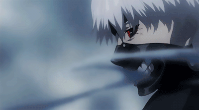
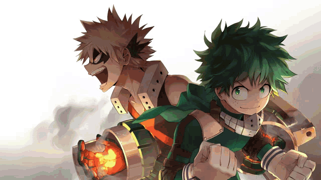

1. One Piece
One Piece is a Japanese anime television series produced by Toei Animation that premiered on Fuji TV in October 1999. It is based on Eiichiro Oda's manga series of the same name. The story follows the adventures of Monkey D. Luffy, a boy whose body gained the properties of rubber after unintentionally eating a Devil Fruit. With his crew of pirates, named the Straw Hat Pirates, Luffy explores the Grand Line in search of the world's ultimate treasure known as "One Piece" in order to become the next Pirate King.
One Piece anime has 1057 episodes over 20 seasons. There are also 15 One Piece movies, 13 specials, 7 OVAs, and 4 One Piece shorts, divided into 10 different sagas.
2. Naruto
s
Naruto is a Japanese manga series written and illustrated by Masashi Kishimoto. It tells the story of Naruto Uzumaki, a young ninja who seeks recognition from his peers and dreams of becoming the Hokage, the leader of his village. The story is told in two parts—the first set in Naruto's pre-teen years, and the second in his teens.
In total, all 3 Naruto anime segments have 1.013 episodes so far. This is not the final number of episodes as Boruto: Naruto Next Generations anime is still ongoing, and part 2 is developing.
3. Attack on Titan
Attack on Titan is a Japanese manga series written and illustrated by Hajime Isayama. It is set in a world where humanity is forced to live in cities surrounded by three enormous walls that protect them from gigantic man-eating humanoids referred to as Titans; the story follows Eren Yeager, who vows to exterminate the Titans after they bring about the destruction of his hometown and the death of his mother.
As of March 4, 2023, 88 episodes of Attack on Titan have aired, currently in its fourth season.
4. Death Note
Death Note (stylized in all caps) is a Japanese manga series written by Tsugumi Ohba and illustrated by Takeshi Obata.The story follows Light Yagami, a genius who discovers a mysterious notebook: the "Death Note", which belonged to the shinigami Ryuk, and grants the user the supernatural ability to kill anyone whose name is written in its pages. The series centers around Light's subsequent attempts to use the Death Note to carry out a worldwide massacre of individuals whom he deems immoral and to create a crime-free society, using the alias of a god-like vigilante named "Kira", and the subsequent efforts of an elite Japanese police task force, led by enigmatic detective L, to apprehend him.
Despite being a cult classic anime series adored by fans around the world, Death Note has only one season, consisting of 37 episodes, which adapt the whole storyline. The series aired between October 3, 2006 and June 26, 2007.
5. One Punch Man
One-Punch Man is a Japanese superhero manga series created by One. It tells the story of Saitama, a superhero who, because he can defeat any opponent with a single punch, grows bored from a lack of challenge. One wrote the original webcomic manga version in early 2009.
There are totally 12 episodes and 5 special episodes called “ One Punch Man specials” . There is also an episode called OPM: Road to Hero. Basically, that episode is about how Saitama got his costume.
6. Demon Slayer
Demon Slayer: Kimetsu no Yaiba , "Blade of Demon Destruction" is a Japanese manga series written and illustrated by Koyoharu Gotouge. It was serialized in Shueisha's shōnen manga magazine Weekly Shōnen Jump from February 2016 to May 2020, with its chapters collected in 23 tankōbon volumes. It has been published in English by Viz Media and simultaneously published by Shueisha on their Manga Plus platform. It follows teenage Tanjiro Kamado, who strives to become a Demon Slayer after his family was slaughtered and his younger sister, Nezuko, turned into a demon.
Kimetsu No Yaiba currently has one season with 25 episodes and a movie . Season 2 of Demon Slayer is current being published.
7. Fullmetal Alchemist: Brotherhood
Fullmetal Alchemist: Brotherhood is a Japanese anime television series adapted from the original Fullmetal Alchemist manga series by Hiromu Arakawa. Produced by Bones, the series is directed by Yasuhiro Irie, written by Hiroshi Ōnogi and composed by Akira Senju. The series was conceived in order to create a faithful adaptation that directly follows the entire storyline of the original manga, after 2003's Fullmetal Alchemist anime series strayed away from it to tell its own story after running out of published manga material to adapt.
There are a total of 64 episodes of FMA Broho - you can watch it in sub and dub on Netflix, and sub on Funimation.
8. Sword Art Online
Sword Art Online is a Japanese light novel series written by Reki Kawahara and illustrated by abec. The series takes place in the then-near future and focuses on protagonists Kazuto "Kirito" Kirigaya and Asuna Yuuki as they play through various virtual reality MMORPG worlds. Kawahara originally wrote the series as a web novel on his website from 2002 to 2008. The light novels began publication on ASCII Media Works' Dengeki Bunko imprint from April 10, 2009, with a spin-off series launching in October 2012. The series has spawned twelve manga adaptations published by ASCII Media Works and Kadokawa.
Sword Art Online began as a series of light novels before it actually received an anime adaptation, which began on July 8, 2012. As of November 2021, Sword Art Online has a total of 96 episodes spread across three seasons of the anime.
9. Tokyo Ghoul

okyo Ghoul is a Japanese dark fantasy manga series written and illustrated by Sui Ishida. It was serialized in Shueisha's seinen manga magazine Weekly Young Jump from September 2011 to September 2014, and was collected in fourteen tankōbon volumes. A prequel, titled Tokyo Ghoul [Jack], ran online on Jump Live in 2013 and was collected in a single tankōbon volume. A sequel, titled Tokyo Ghoul:re, was serialized in Weekly Young Jump from October 2014 to July 2018, and was collected in sixteen tankōbon volumes. The story is set in a world where vicious species, known as ghouls, creatures that look like normal people but can only survive by eating human flesh, live among the human population in secrecy.
As you can see, each season of Tokyo Ghoul has exactly 12 episodes, which amounts to a total of 48 episodes that you have to watch in order to complete the narrative. Each episode is roughly 20 minutes long, which amounts to around 1000 minutes of material, i.e. a total of 16 hours. If you have the time, Tokyo Ghoul is not an overly complicated binge watch and we strongly recommend it.
10. Hunter X Hunter
Hunter x Hunter is a Japanese manga series written and illustrated by Yoshihiro Togashi. It has been serialized in Shueisha's shōnen manga magazine Weekly Shōnen Jump since March 1998, although the manga has frequently gone on extended hiatuses since 2006. Its chapters have been collected in 37 tankōbon volumes as of November 2022. The story focuses on a young boy named Gon Freecss who discovers that his father, who left him at a young age, is actually a world-renowned Hunter, a licensed professional who specializes in fantastical pursuits such as locating rare or unidentified animal species, treasure hunting, surveying unexplored enclaves, or hunting down lawless individuals. Gon departs on a journey to become a Hunter and eventually find his father. Along the way, Gon meets various other Hunters and encounters the paranormal.
The 2011 version has 148 eps and covers till the Election Arc of the manga. Since the manga is still ongoing but goes on hiatus often, they didn’t have much content to animate so they stopped at ep 148 after a major arc was finished.
11. My Hero Academia [ Honourable Mention ]

My Hero Academia is a Japanese superhero manga series written and illustrated by Kōhei Horikoshi. It has been serialized in Shueisha's shōnen manga magazine Weekly Shōnen Jump since July 2014, with its chapters additionally collected into 37 tankōbon volumes as of February 2023. Set in a world where superpowers (called "Quirks") have become commonplace, the story follows Izuku Midoriya, a boy who was born without a Quirk but still dreams of becoming a superhero himself. He is scouted by All Might, Japan's greatest hero, who bestows his Quirk to Midoriya after recognizing his potential, and helps to enroll him in a prestigious high school for superheroes in training.
As My Hero Academia or Boku no Hero Academia is still ongoing, there are 4 Seasons as of now which includes a total of 88 episodes.